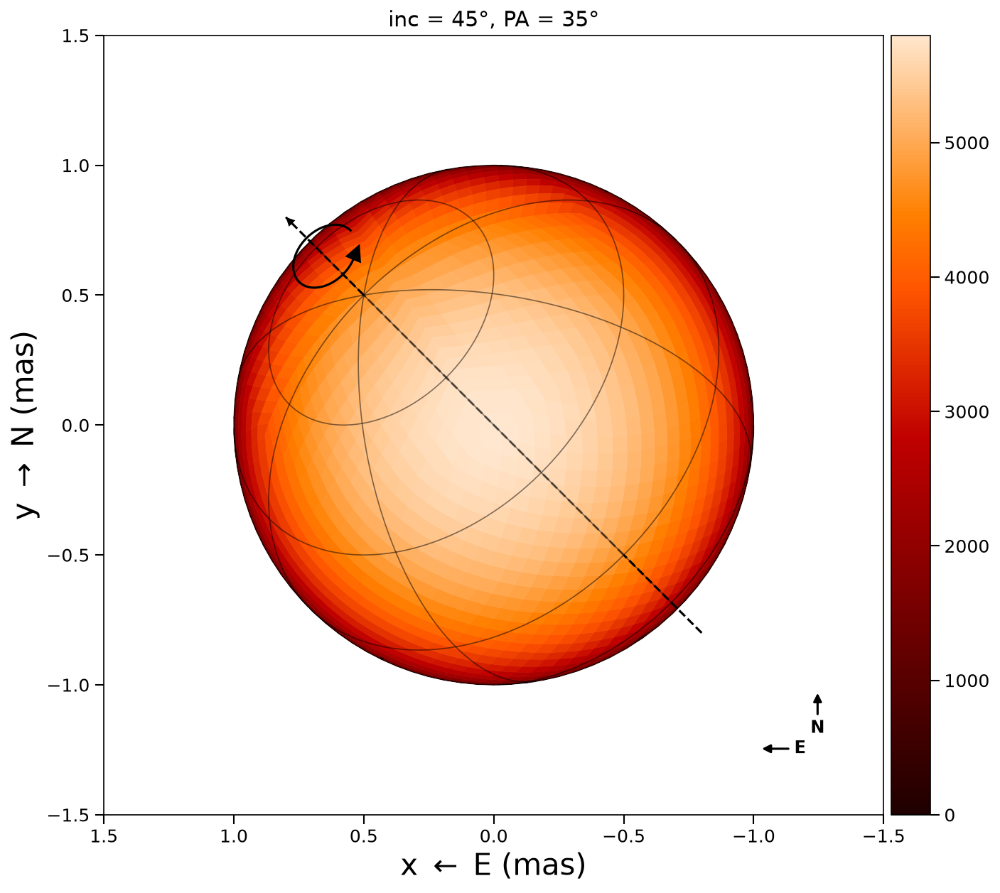

Conventions
Coordinate systems, angles and signs used by the geometry, orbit, radial-velocity and plotting code.
Sky plane
Astronomical sky-plane convention:
| Axis | Direction | Internal name |
|---|---|---|
| x | East (left on plots) | -proj_west |
| y | North (up on plots) | proj_north |
| z | toward the observer | normal_z > 0 is visible |
Projected vertices are stored as proj_west and proj_north, in mas. Plots negate the West component so East is on the left.
Stellar surface coordinates
The unit sphere uses spherical coordinates:
| Coordinate | Symbol | Range | Definition |
|---|---|---|---|
| Colatitude | θ | 0 to π | from the North pole |
| Longitude | φ | 0 to 2π | increasing eastward |
Cartesian: x = sin(θ)cos(φ), y = sin(θ)sin(φ), z = cos(θ).
Spin-axis angles
Inclination
Angle between the spin axis and the line of sight (+z, toward the observer).
| Value | Meaning |
|---|---|
| 0° | pole-on |
| 90° | equator-on |
Position angle (PA)
Angle of the projected spin axis on the sky, from North through East (counterclockwise on plots).
| Value | Projected pole points ... |
|---|---|
| 0° | North |
| 90° | East |
Spin-axis direction:
spin_x = -sin(inc) sin(PA) (West component)
spin_y = sin(inc) cos(PA) (North component)
spin_z = cos(inc) (toward observer)Rotation matrix
ZXZ Euler angles, applied as a right multiplication of the vertex coordinates:
xyz_rotated = xyz · R(ψ, inc, PA)where R = Rz(-ψ) · Rx(inc) · Rz(-PA) and the angles are:
| Angle | Symbol | Meaning |
|---|---|---|
| ψ | 2π (t − t0) / rotation_period | rotation phase |
| inc | inclination (degrees in star_params) | tilt from the line of sight |
| PA | position_angle (degrees in star_params) | orientation on the sky |
Rotation is counterclockwise on sky plots seen from the visible pole: a surface feature moves West → North → East as time increases. (rot_vertex in src/geometry.jl.)
Rotation sense
Stellar spin and orbital motion have the same sense: counterclockwise on the sky when the angular momentum points toward the observer.
| Motion | Face-on (inc or i = 0°) | On sky (East left, North up) |
|---|---|---|
| Stellar spin | Feature: West → North → East | Counterclockwise |
| Orbital (increasing ν) | Secondary: North → East → South | Counterclockwise |
A spin feature at (West=1, North=0) at t=0 is at (West=0, North=1) at t=P/4; a secondary at (North=1, East=0) at ν=0 is at (North=0, East=1) at ν=π/2.
Rotation phase and the epoch t0
The surface spins at
\[\psi = 2\pi\,(t - t_0) / P_\mathrm{rot}\]
with t0 and rotation_period in the units of the epochs. t0 defaults to 0.
What ψ = 0 means on the surface
The sub-observer longitude is 270° at
ψ = 0and decreases with phase:\[\lambda_\mathrm{sub-obs} = 270° - 360°\,(t - t_0)/P_\mathrm{rot}\]
where longitude is
atan2(y, x)of the body-frame tessel centre, in[0°, 360°);The body +x axis lies in the plane of the sky. For
surface_type = 1that axis isradius_x, so for a prolate (tidally distorted) figureψ = 0is a maximum-elongation phase.
Setting t0 from a published ephemeris
For a tidally locked binary the long axis points at the companion:
At t = t0 | |
|---|---|
| long axis | in the plane of the sky |
| orbital position | nodal passage |
| projected area | maximum |
| ellipsoidal light curve | maximum |
A published time of nodal passage (a maximum of the ellipsoidal light curve) can be used as t0; the map is then in that paper's longitude system.
A prolate silhouette repeats every half rotation: the long axis is in the plane of the sky at ψ = 0 and at ψ = 0.5. Which end of the tidal axis faces the companion (ascending or descending node) is set by the ephemeris's definition. If it is unknown, t0 is ambiguous by half a period; resolve it with the surface map or the radial velocities.
The orbital T0 (ORBIT_ELEMENTS, src/orbits.jl) is the time of periastron: M = n·(t − T0). A circular-orbit spectroscopic ephemeris quotes a nodal passage instead; the two are not interchangeable. The surface t0 is the rotation phase zero, independent of both.
Worked example: ζ And
Roettenbacher et al. give P = 17.769426 d and a time of nodal passage T0 = MJD 49992.281 from the ellipsoidal light curve. With their published map and geometry, and the six 2019 epochs as MJD:
surface t0 | χ²/n |
|---|---|
T0 | 19.34 |
T0 + P/2 | 2.11 |
| best over a scan of the full period | 2.11, at T0 + 0.500 P |
Their T0 is the other node, ψ = 0.5 in ROTIR's convention. Use
t0 = 49992.281 + 17.769426/2 # their T0 is the opposite nodal passagewith unshifted MJD epochs. demos/zetand_surfing_conventions.jl prints the table; demos/zetand_joint_map.jl measures the remaining longitude offset between a ROTIR reconstruction and theirs.
Visibility
A surface element is visible when its outward normal has z > 0. The mask is soft:
weight = sigmoid(κ · normal_z)κ sets the sharpness of the limb transition (create_star(…; κ = 50)). Pixels with weight ≤ 0.01 are dropped.
Binary orbital elements
Standard astrometric and spectroscopic conventions:
| Parameter | Symbol | Unit | Definition |
|---|---|---|---|
| Orbital inclination | i | degrees | between orbital angular momentum and line of sight (0° face-on, 90° edge-on) |
| Longitude of ascending node | Ω | degrees | position angle of the ascending node, N through E |
| Argument of periapsis | ω | degrees | from ascending node to periapsis, in the orbital plane, for the relative orbit (secondary); the primary's is ω + π |
| Period | P | days | |
| Semi-major axis | a | mas | |
| Eccentricity | e | ||
| Time of periapsis | T0 | days | same time system as the epochs |
| Mass ratio | q | M₂ / M₁ | |
| Period derivative | dP | days/day | |
| Apsidal motion | dω | degrees/day | positive in the direction of orbital motion |
compute_coeff() computes the Thiele–Innes coefficients from (Ω, i, ω).
Orbital output frame
binary_orbit_rel and binary_orbit_abs return positions in the observer frame:
| Component | Direction |
|---|---|
| x | North (Dec increasing) |
| y | East (RA increasing) |
| z | away from the observer (positive = receding) |
The orbital z axis points away from the observer; the stellar-geometry z axis points toward it. orbit_to_rotir_offset converts the orbital position to the sky-plane offset:
offset_west = -(East component) # West = -East
offset_north = North componentRadial velocities
binary_RV returns radial velocities in the units of K1, K2 and γ (km/s by convention):
| Sign | Meaning |
|---|---|
| positive | receding |
| negative | approaching |
Vrad = γ + K [cos(ν + ω) + e cos(ω)]where ν is the true anomaly. The secondary uses ω, the primary ω + π.
Annotated example
A sphere at inclination 45° and position angle 45°, with spin axis, rotation arrow, graticules and compass:
